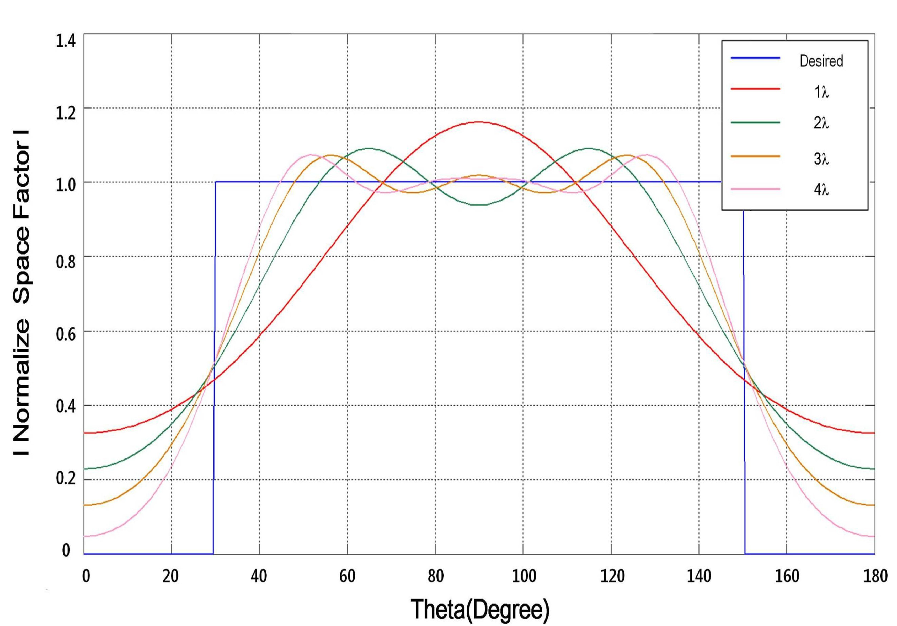

연구실적 · 국내전문학술지
격벽 구조형 원형 편파기의 시컨트 패턴 방사체 설계
Design of Secant Pattern Radiator with Septum Circular Polarizer

초록
본 논문에서는 위성 데이터 통신을 위해 격벽 구조형 원형 편파기와 결합된 넓은 빔 폭을 갖는 시컨트 패턴 안테나를 설계하였다. 방사 패턴을 형성하기 위하여 전류 분포와 공간인자 사이의 푸리에 변환 관계를 이용하였고, 원형 대칭인 개구 형태를 이용하여 설계를 용이하게 하였다. 설계한 방사체를 격벽 구조형 원형 편파기와 결합하여 최적화 과정을 수행하였으며, 설계된 방사 패턴, 축비, 반사 손실 특성이 안테나의 목표 성능에 적합함을 확인하였다.
In this paper, we design a secant pattern antenna combined with a septum circular polarizer to be used in the satellite data communications. To generate a radiation pattern with secant type, Fourier relationship between current distribution and space factor is applied and the circular symmetric structure of the aperture simplifies the design. The optimization process is performed by combining the radiator with the septum circular polarizer, and it is confirmed that the designed radiation pattern, axial ratio, and return loss characteristics satisfies the required performance of the antenna.
사이트 원문 표기
Jung-Min Yim (임정민), Jae-Ki Son (손재기), Taek-Kyung Lee (이택경), Jae-Wook Lee (이재욱), Woo-Kyung Lee (이우경), “격벽 구조형 원형 편파기의 시컨트 패턴 방사체 설계”, 한국전자파학회논문지, 제25권 1호, 2014년
BibTeX
@article{Yim_2014,
title={Design of Secant Pattern Radiator with Septum Circular Polarizer},
volume={25},
ISSN={1226-3133},
url={http://dx.doi.org/10.5515/kjkiees.2014.25.1.32},
DOI={10.5515/kjkiees.2014.25.1.32},
number={1},
journal={The Journal of Korean Institute of Electromagnetic Engineering and Science},
publisher={Korean Institute of Electromagnetic Engineering and Science},
author={Yim, Jung-Min and Son, Jae-Ki and Lee, Taek-Kyung and Lee, Jae-Wook and Lee, Woo-Kyung},
year={2014},
month=Jan,
pages={32–38}
}